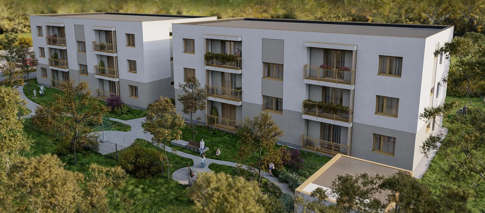
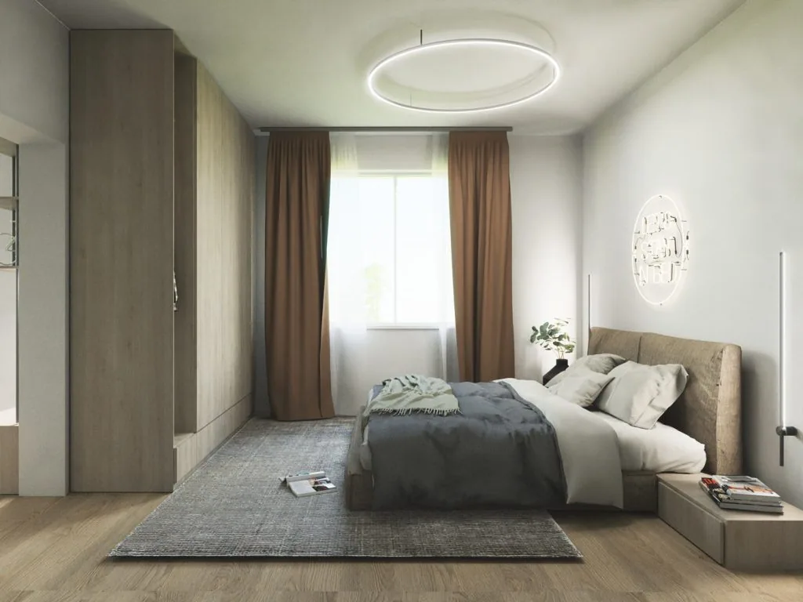

Dvojizbový byt
114 900 €
44,20 m² vrátane loggie
- Vstupná chodba3,04 m²
- Obytná kuchyňa21,50 m²
- Izba12,00 m²
- Kúpeľňa + WC3,61 m²
- Loggia4,05 m²
Byty A1, D1, E2, H2, I3, L3
O projekte
Projekt pozostáva z dvoch dispozične rovnakých bytoviek umiestnených vedľa seba, v okolí ktorých je plánovaná zelená výsadba lúčnych kvetov a stromov.

Charakteristika bytov
Na výber sú moderné dvojizbové a trojizbové byty v obci Černík, navrhnuté s dôrazom na kvalitu, funkčnosť a estetiku. Každý byt je vyhotovený v prémiovom štandarde, ktorý zahŕňa laminátové podlahy v teplých odtieňoch, plastové okná s izolačnými sklami pre maximálnu energetickú úspornosť, modernú sanitu v kúpeľniach, kvalitný obklad a dlažbu v harmonických farbách, ako aj bezpečnostné dvere pre váš pokoj a bezpečie. Interiér je navrhnutý tak, aby poskytoval dostatok prirodzeného svetla a priestoru pre pohodlné bývanie. Súčasťou každého bytu je praktická loggia, ideálna na relax alebo pestovanie rastlín, a vlastné parkovacie miesto hneď vedľa bytového domu, ktoré je zahrnuté v cene.
Pozrieť ponuku bytovVďaka moderným technológiám, ako sú tepelné čerpadlá a solárne kolektory, sú vaše mesačné náklady príjemne nízke.
Byt v prémiovom štandarde – laminátové podlahy, plastové okná s izolačnými sklami a bezpečnostné dvere.
Detské ihrisko a spoločný priestor pre relax vytvárajú ideálne miesto pre rodiny a susedské vzťahy.
Každý byt má vlastné parkovacie miesto zahrnuté v cene – žiadne starosti s parkovaním.
Ponuka
114 900 €
44,20 m² vrátane loggie
Byty A1, D1, E2, H2, I3, L3
149 900 €
68,67 m² vrátane loggie
Byty B1, C1, F2, G2, J3, K3
Charakteristika bytového domu

Lokalita
Černík je malá obec so srdcom v tichej lokalite, ponúkajúcej pokoj a súčasne rýchly prístup do okolitých miest. Černík, umiestnený v severnej časti okresu Nové Zámky, patrí do Nitrianskeho kraja. Obec poskytuje výhľad na ľavý breh rieky Nitry, vinohradnícku oblasť a lesy na rozlohe až 315 ha, pričom sa rýchlo rozvíja aj miestny priemysel. S rozlohou poľnohospodárskej pôdy viac ako 900 ha a celkovou rozlohou obce 1 339 ha predstavuje malý kúsok krajiny plný príležitostí.
Kataster obce obsahuje rybník a časť štrkoviska, obľúbené miesta rybárov a rodín na relaxačné prechádzky. Ideálne sú nielen na stretávanie a oddych, ale aj na tvorbu spoločných spomienok. Nezabudnime ani na blízkosť Podhájskej, ktorá je len kúsok od obce a ponúka ďalšie možnosti rekreačného vyžitia.
Susedné obce: Mojzesovo, Vinodol, Komjatice, Maňa, Kmeťovo, Michal nad Žitavou.
Prečo Černík
Predstavujeme modernú novostavbu s dostupnými a pohodlnými bytmi.
Vďaka moderným izolačným technológiám, vykurovaniu tepelným čerpadlom, ohrevu vody tepelným čerpadlom a solárnym kolektorom sú mesačné náklady na bývanie príjemne nízke.
Okolie ponúka príjemné prostredie na prechádzky a cykloturistiku.
Obchody, materská škola, základná škola Mojzesovo, pošta, reštaurácia a všeobecný lekár sú v pohodlnom dosahu.
Obec disponuje najmodernejším zberovým dvorom s plným spektrom služieb pre občanov a poskytuje aj širokú škálu služieb na objednávku.
Obec pravidelne organizuje rôzne kultúrno-spoločenské slávnosti a podujatia.
Obyvatelia sa môžu tešiť na bezpečné a priateľské prostredie, kde sa každý cíti ako doma.
Máte otázku k bytu alebo chcete termín obhliadky? Zavolajte, alebo napíšte.